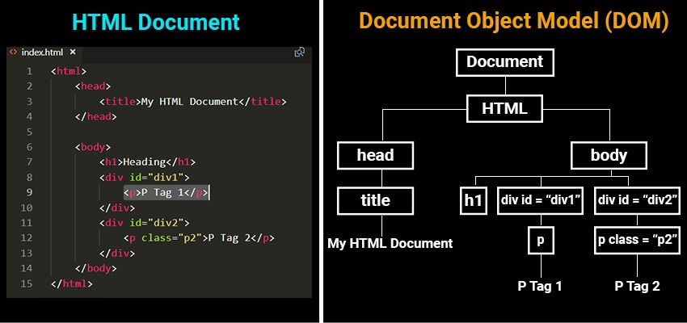

FE JavaScript
Lesson 8

🙈 dalibor.schon@ness.com
🙉 lukas.orgovan@ness.com
🙊 erik.fecko@ness.com
🙉 lukas.orgovan@ness.com
🙊 erik.fecko@ness.com
Document Object Model (DOM)
DOM
Selecting elements
document.querySelector
returns the first
HTMLElement within the
document that matches the specified selector, or group of
selectors. If no matches are found,
null is returned.
let tag;
// select by id
tag = document.querySelector('#box');
// select by class
tag = document.querySelector('.menu');
// select by tag
tag = document.querySelector('nav');